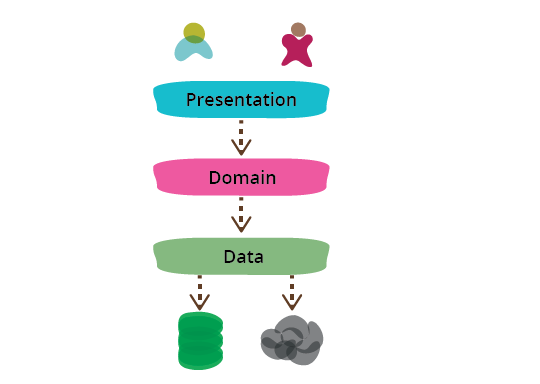

Presentation Domain Data Layering
Separação do software em apresentação, lógica de negócio e acesso aos dados para facilitar a organização e compreensão do sistema.
1. Qual é a ideia?
Uma das maneiras mais comuns de modularizar uma aplicação é separá-la em três grandes camadas: apresentação, domínio e dados. A camada de apresentação é responsável pela interface e pela interação com o usuário; a camada de domínio concentra as regras e os comportamentos do negócio; e a camada de dados cuida do acesso e da persistência das informações.
Essa divisão permite que cada parte da aplicação tenha uma responsabilidade mais clara. Ao trabalhar na camada de domínio, por exemplo, a equipe pode se concentrar nas regras do negócio sem precisar lidar diretamente com os detalhes da interface ou do banco de dados. Da mesma forma, ao trabalhar na camada de apresentação, é possível focar no comportamento da interface, tratando os dados necessários como algo que pode ser obtido por meio de chamadas à camada responsável por eles.
Dessa forma, a separação das camadas reduz a quantidade de aspectos que precisam ser considerados ao mesmo tempo. Em vez de lidar com toda a aplicação de uma só vez, a equipe pode trabalhar em cada parte de maneira mais independente, tornando o código mais organizado e facilitando sua manutenção e evolução.

2. Exemplo prático
Imagine um sistema de cadastro de alunos.
"Cadastrar aluno"
Validar dados
Salvar aluno
A tela não precisa conhecer todos os detalhes do banco de dados. Da mesma forma, a regra de negócio pode ser desenvolvida sem ficar diretamente presa aos elementos visuais da interface.
3. Vantagens e desvantagens
Vantagens
- Reduz o escopo de atenção de cada parte do sistema.
- Facilita a organização do código.
- Pode melhorar a testabilidade.
- Permite compreender cada responsabilidade de maneira mais isolada.
- Ajuda na manutenção de aplicações.
Desvantagens
- Camadas não devem ser utilizadas de forma excessivamente rígida.
- Em sistemas grandes, cada camada pode ficar complexa demais.
- Separar equipes por camada pode aumentar a distância entre desenvolvedores e usuários.
- Uma arquitetura com muitas camadas pode gerar complexidade desnecessária.
4. Impacto na gestão do projeto
Uma separação clara de responsabilidades pode facilitar o desenvolvimento e a manutenção, reduzindo o tempo necessário para localizar problemas.
A organização pode reduzir custos de manutenção, mas uma estrutura excessivamente complexa pode aumentar o esforço de desenvolvimento.
A equipe consegue identificar melhor as responsabilidades de cada parte, embora Fowler alerte que separar equipes por camadas pode criar distância entre desenvolvedores e usuários.
A separação pode reduzir o risco de alterações em uma parte afetarem diretamente outras partes, desde que as responsabilidades sejam bem definidas.
5. Para pensar
Não. Fowler destaca que as camadas são principalmente uma separação lógica. As três podem estar executando no mesmo computador.
Não. É possível utilizar mais camadas. O importante é preservar uma separação coerente das responsabilidades e evitar complexidade sem necessidade.
Uma das principais vantagens apontadas por Fowler é reduzir o escopo de atenção, permitindo que o desenvolvedor se concentre em uma parte do problema sem precisar considerar todas as outras ao mesmo tempo.
Martin Fowler — Presentation Domain Data Layering
Acessar artigo original →